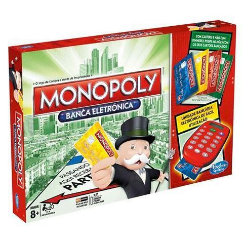

El juego de mesa más vendido de la historia
Antes
Un juego creado con la funcion de servir como herramienta para enseñar las teorias acerca de la justicia social y economica extraidas del estudio titulado Progreso y Miseria de Henry George.
Monopoly
Comercializado por vez primera en el año de 1936.
A lo largo de 80 años, el juego a sufrido una notable evolucion. Sus multiples ediciones y sus tantas versiones han dado pie a que se cambiara desde la caja que lo contiene hasta los elementos que lo componen. Logrando asi, mantenerse como el favorito a traves de las decadas.
Ahora
con los años la finalidad del juego cambio para solo disfrutar un buen rato, negociando propiedades y hasta haciendo uso de medios electronicos para todas las transacciones que requiere el juego

Con información de Gràffica.info, cultura visual